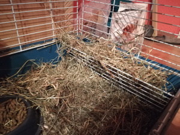
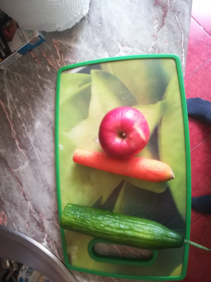
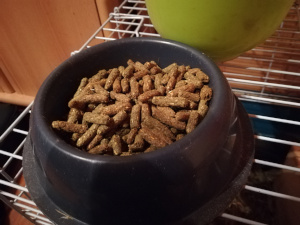

A tengerimalac étrendje
A tengerimalac étrendje 3 dologból áll:
- Széna
- Gyümölcs/zöldség
- Eledel



A tengerimalacnak az összes felsorolt dologra szüksége van nap mint nap az egészséges élethez. Szénát és tápot mindenképpen igyekezzünk biztosítani nekik hogy akármikor ehessenek (ezek közül a széna a legfontosabb). Gyümölcsöt vagy zöldséget viszont naponta 1-2 alkalommal adjunk nekik, mert ezektől elhízhatnak. Ha a tengerimalac nem hajlandó az itatóból inni, akkor érdemes több gyümölcsöt vagy zöldséget adni neki, mert a nedvesség igenyét ezekből is ki tudja elégíteni.
Mit elhetnek
| Étel neve | Ehető | Nem ehető |
|---|---|---|
| Magok | X | |
| Alma | X | |
| Eper | X | |
| Őszibarack | X | |
| Banán | X | |
| Ananász | X | |
| Áfonya | X | |
| Szőlő | X | |
| Cseresznye | X | |
| Füge | X | |
| Gránátalma | X | |
| Meggy | X | |
| Málna | X | |
| Szilva | X | |
| Görögdinnye | X | |
| Narancs | X | |
| Mandarin | X | |
| Grapefruit | X | |
| Répa | X | |
| Fejes saláta | X | |
| Jég saláta | X | |
| Kelbimbó | X | |
| Káposzta | X | |
| Tejtermékek | X | |
| Édesség | X | |
| Hús | X |